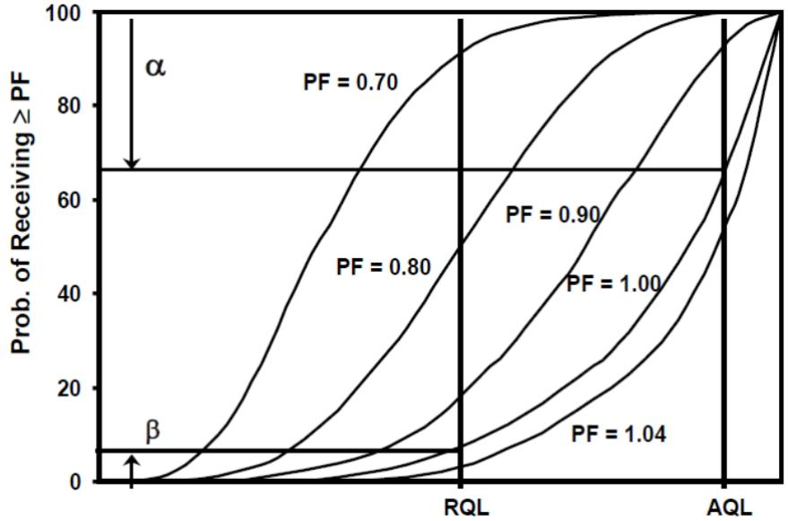
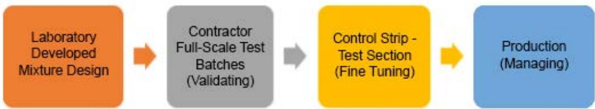

Quality Assurance
Quality Assurance is a systematic, planned set of activities designed to provide confidence that products or services will meet defined performance specifications throughout their entire life cycle. It functions as a preventive discipline that minimizes defects through early-stage interventions such as design reviews, material pre-qualification, and risk analysis rather than merely detecting errors after they occur [1]. The framework relies on structured cycles of planning, monitoring, and continuous improvement to identify potential problems and implement corrective actions that maintain process stability within defined tolerance limits [1] [2]. Core mechanisms include statistical sampling, testing, inspection, and independent verification supported by documented records and qualified personnel to ensure compliance and support data-driven decision making [1] [2].
Sources (2)
Key findings
- Current acceptance testing focused on easily measured attributes like strength and thickness while neglecting critical factors such as steel joint placement, air-void structure, permeability, and curing [2].
- Airport concrete pavement quality assurance was compromised by fragmented team structures, a shortage of qualified personnel, and ambiguous specification language [1].
- Effective quality assurance depended on a contractor-driven continuous quality-control program rather than merely duplicating acceptance tests [2].
- A robust QA program required a culture of quality driven by strong management commitment, clear corporate-level policies, and continuous education to raise workforce maturity [1].
- Successful assurance hinged on collaborative participation among all stakeholders with clearly defined roles to avoid delays and disputes caused by poorly defined responsibilities [1].
- Reducing overall variability through consistent concrete production and using the same technician for all samples improved QA outcomes [2].
- Effective communication supported by modern cloud-based tools aligned expectations, shared test data, and resolved soft-metric ambiguities before they became disputes [1].
- QA staff met agency-specified education, experience, and certification requirements and remained on-site throughout critical activities to maintain continuity and ensure data integrity [1].
Quality Management Systems and Statistical Controls
Quality assurance functions as a systematic, preventive framework that ensures products and processes meet defined standards through planned activities spanning the entire lifecycle [2]. The system relies on structured cycles of planning, monitoring, and continuous improvement to minimize defects by addressing potential issues before they occur in production [1]. Statistical sampling serves as the core mechanism for assessing process stability and detecting variation, enabling data-driven decisions that maintain performance within established tolerance limits [1] [2].
The following figure illustrates practical applications of these quality assurance principles in non-destructive thickness testing.
A worker uses a rover pole to measure the thickness of freshly placed concrete. [1]
The figure shows a construction worker wearing a hard hat and holding a long, graduated metal rod known as a rover pole.
Research problem — Quality assurance for concrete pavement is undermined by a lack of systematic monitoring and verification across the entire production lifecycle, from batching to curing [2]. Fragmented and under-resourced quality assurance functions in airport infrastructure projects lead to inconsistent interpretation of specifications and reliance on reactive inspection rather than proactive control [1]. Inconsistent precision among testing methods creates friction between contractor quality control teams and agency quality assurance staff, threatening the resolution of conflicts and the achievement of specified durability standards [2].
State of the art — Current quality assurance frameworks have evolved from passive end-of-project inspection to integrated, data-driven systems that monitor contractor process control in real time and link payment directly to measured performance [1]. Statistical acceptance methods, such as Percent-Within-Limits specifications, are widely adopted to reward reduced variability, prompting a shift toward minimizing both mix-production and test-procedure variations through standardized personnel certification and rigorous laboratory verification [2]. The field is increasingly defined by the adoption of performance-based specifications like Performance-Engineered Concrete Mixtures and digital enablement tools, including cloud-based platforms and automated reporting, which support continuous improvement loops rooted in Deming’s principles [1].
The following figure illustrates how these integrated systems facilitate the alignment of contractor quality control and process control activities with overall quality assurance and acceptance protocols.
 Integration of contractor QC and process control activities with QA and acceptance. [1]
Integration of contractor QC and process control activities with QA and acceptance. [1]
The figure illustrates a continuous workflow for pavement construction that integrates data-driven analytics, testing, inspection, success evaluation, and final acceptance into a single cycle.
Findings from the reports
- Current acceptance testing focused on easily measured attributes like strength and thickness while neglecting harder-to-measure factors such as steel joint placement, air-void structure, permeability, and curing [2].
- Systemic shortcomings in quality assurance included a shortage of qualified personnel, insufficient dedicated resources, and inadequate training [1].
- Ambiguous or conflicting specification language led to non-uniform enforcement of quality assurance provisions and inconsistent acceptance decisions across projects [1].
- Review and approval of material samples did not guarantee that the same material would be used during production, as evidenced by trial batches failing to achieve approved workability due to differing aggregates [1].
- The Percent Within Limits statistical acceptance method linked compliance to payment probabilities, showing a roughly 60% chance of full payment when a lot met the acceptable quality level [1].
- Quality assurance was fundamentally compromised by fragmented team structures and ambiguous specification language, which prevented proactive decision-making and consistent material control [1].
- Effective quality assurance required a contractor-driven continuous quality-control program that integrated personnel training, preliminary material testing, equipment checklists, and real-time result documentation [2].
- A robust quality assurance program needed to be built on strong management commitment, clear corporate-level policies, and continuous education to raise workforce maturity [1].
- Successful assurance depended on collaborative participation among all stakeholders with clearly defined roles to avoid delays and disputes caused by poorly defined responsibilities [1].
- Acceptance authority needed to remain independent of the quality control function to avoid bias, and random split-sample testing was recommended to mitigate disputes over divergent results [1].
Novelty & rigor — The research introduces a re-engineered eight-step quality assurance framework that expands upon traditional Deming cycles by incorporating explicit problem identification and evidence weighing, thereby creating a more granular, fact-based decision pathway than generic industry standards [1]. Distinctive statistical controls are implemented through the Percent Within Limits method, which explicitly maps contractor and owner risks to Type I and Type II errors while linking acceptance metrics to graduated payment structures via operating-characteristic curves [1] [2]. Reproducibility is ensured by mandating a complete production chain documentation from laboratory mix design through curing, requiring consistent technician execution to minimize variability and utilizing cloud-based platforms for unified data capture across all project phases [1] [2].
The following figure illustrates a typical operating-characteristic curve used to visualize how acceptance plans link quality metrics to payment adjustments.

Typical Operating Characteristic (OC) Curve for an acceptance plan with payment adjustments. [1]The figure displays a set of S-shaped curves plotting the probability of receiving a specific performance factor against quality metrics defined by the Acceptable Quality Level (AQL) and Rejection Quality Limit (RQL).
Reported values
| Parameter | Value | Context | Source |
|---|---|---|---|
| deviation from plan grade elevation | 3/8 in | Lot A surveyed elevation points | [1] |
| DOD minimum continuous paving in test section | 400 feet | required within the test section | [1] |
| DOD test section length limit | 600 feet | DOD limits the length and requires at least 400 feet of continuous paving within the test section | [1] |
| elevation deviation limit for Lot A | 3/8 in in. | no surveyed elevation point was more than this distance from the plan grade elevation | [1] |
| FAA start-up paving allowance | 250 feet | FAA permits this length for adjustments before beginning the control/test strip | [1] |
| minimum bidding duration | 45 days | recommended for bidders to evaluate aggregate products or setup screening nests | [1] |
| probability of receiving 100% or greater pay | 60% | material meeting the acceptable quality level (AQL) | [1] |
| probability of receiving 104% or greater pay | 45% | material meeting the acceptable quality level (AQL) | [1] |
| probability of receiving 90% or greater pay | 90% | material meeting the acceptable quality level (AQL) | [1] |
| project cost threshold for Construction Management Program | $500K | on FAA projects exceeding this amount in paving, the Owner must have a Construction Management Program | [1] |
| PWL for flexural strength | 100 | flexural strength test results | [1] |
| PWL for flexural strength test results | 100 | calculated when QL= 2.78 falls above PWL 99 | [1] |
| QA/QC test result difference threshold (follow procedures) | 20% | if the difference between QA and QC test results is greater than this, follow Engineering Brief 34A procedures | [1] |
| QA/QC test result difference threshold (use QA) | 10% | when QA and QC test results are within this range, QA tests should be used | [1] |
| QA/QC test result difference threshold (use QC) | 20% | when QC test results are greater than QA but less than this range, QC tests should be used | [1] |
6 more distinct values omitted here; the full span-verified set is in the quantities sidecar.
Across the reviewed reports, Quality Assurance systems are collectively characterized by significant operational vulnerabilities stemming from personnel shortages, ambiguous specifications, and a reliance on easily measured attributes that often neglect critical structural factors. While both reports emphasize the necessity of independent verification to mitigate bias in acceptance testing, they converge on the application of statistical methods like Percent Within Limits (PWL) to quantify compliance and link quality outcomes to payment probabilities. The synthesis indicates that effective Quality Management requires a shift from mere duplication of acceptance tests toward contractor-driven continuous quality control programs that integrate rigorous training, real-time data collection, and strict adherence to statistically valid sampling plans. [1] [2]
The following figure illustrates how statistical methods can distinguish between mere compliance with acceptance limits and true optimization of quality outcomes.
 Concentric circles representing test results falling within acceptance limits, consistent control not optimally meeting target, and quality meeting the target. [1]
Concentric circles representing test results falling within acceptance limits, consistent control not optimally meeting target, and quality meeting the target. [1]
The figure displays three concentric zones: an outer pink ring, a middle green ring, and an inner white circle containing multiple ‘x’ marks.
Implications — Quality assurance must evolve from a passive acceptance activity into an organization-wide, proactive function embedded throughout the project lifecycle to prevent disputes and costly rework [1]. Effective systems require monitoring hidden variables such as joint placement and curing while ensuring that testing variability is managed through standardized procedures and independent verification rather than penalizing contractors for uncontrollable factors [2]. Decision-making should rely on statistically based evaluation methods to accept work reasonably close to specifications, supported by qualified staff empowered with engineering judgment and a culture of continuous education [1] [2].
The following figure illustrates the sequential steps for adjusting concrete mixture proportions as part of this proactive process control.

Sequential steps for adjusting concrete mixture proportions as part of proactive process control. [1]The figure displays a four-stage linear workflow starting with Laboratory Developed Mixture Design, followed by Contractor Full-Scale Test Batches (Validating), Control Strip - Test Section (Fine Tuning), and concluding with Production (Managing).
Limitations — Statistical acceptance procedures often assume normal data distributions, which causes calculated standard deviations to reflect testing variability rather than true material quality and may unfairly penalize contractors for variations beyond their control [2]. The reliability of technical measurements is compromised by infrequent testing, sampling variability, and outlier data, while soft-metric criteria lack enforceable standards [1]. Uneven stakeholder knowledge regarding specifications and ambiguous or conflicting quality assurance provisions hinder uniform implementation across project participants [1].
The figure below illustrates how these limitations manifest in practice by depicting contractor risk within the FAA’s Pay-by-Weight-Limit (PWL) acceptance approach.
 Contractor’s Risk Using Strength as Example [1]
Contractor’s Risk Using Strength as Example [1]
The figure displays a bell-shaped curve representing the variation in material quality within a lot, centered around an acceptable quality level.
Evidence: 2 reports (2 primary)
Related concepts
In this hierarchy
- Parent: Quality Assurance
- Sibling: Project Management
- Sibling: Quality Control
Related by shared evidence
- Aggregate Impact — shares 2 reports
- Aggregate Management — shares 2 reports
- Aggregate Management — shares 2 reports
- Cement Chemistry — shares 2 reports
- Cementitious Materials — shares 2 reports
- Concrete Cracking — shares 2 reports
- Concrete Mixture Design — shares 2 reports
- Concrete Production — shares 2 reports
Similar topics
- Quality Assurance
- Mixture Management
- Quality Control
- Quality Control
- Project Management
- Quality Control
- Pavement Assessment
- Concrete Strength
Source coverage
| Source | Quality Management Systems and Statistical Controls |
|---|---|
| [1] | ✓ |
| [2] | ✓ |
References
- Best Practices Manual: Quality Control and Quality Acceptance of Concrete Airport Pavement (2025)
- Integrated Materials and Construction Practices for Concrete Pavement: A STATE-OF-THE-PRACTICE MANUAL (2019)
Feedback on this page